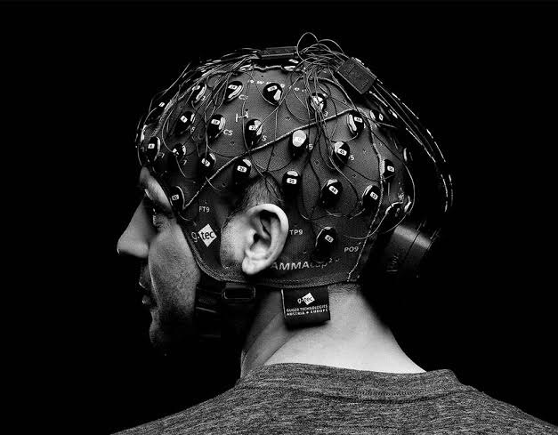
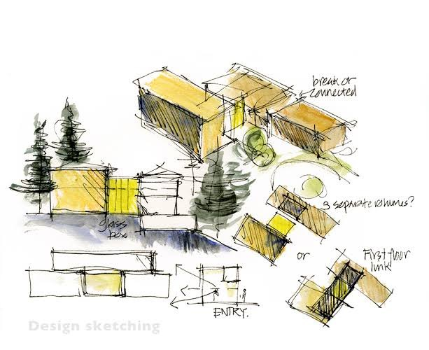

حيث يلتقي العقل البشري بالذكاء الاصطناعي
Where human minds meet artificial ones
ما المقصود بالذكاء، وهل تستطيع الآلة أن تبدع؟ استكشف هذه الأسئلة من خلال عشر دراسات محكّمة.
What do we mean by intelligence, and can a machine be creative? Explore the questions through ten peer-reviewed studies.
دورات مجانية عبر الإنترنتFree online coursesاقرأ الأبحاثRead the researchالذكاء: ما هو وكيف يُقاس
Intelligence: what it is and how it is measured
قدّم الباحثون عشرات التعريفات للذكاء. ويختزلها أحد الجهود المؤثرة في القدرة على تحقيق الأهداف في بيئات متعددة، وهو تعريف يصلح للبشر والآلات معًا.
Researchers have offered dozens of definitions of intelligence. One influential effort reduces them to the ability to achieve goals across many environments, a definition meant to fit people and machines alike.
يتعلم الإنسان من أمثلة قليلة جدًا ويبني تفسيرات سببية للعالم. أما أنظمة الذكاء الاصطناعي الحالية فتحتاج غالبًا إلى بيانات أكثر بكثير، ومع ذلك باتت تضاهي البشر أو تتفوق عليهم في بعض مهام الاستدلال، مثل بعض مسائل التناظر. ولا يزال العلماء مختلفين حول ما إذا كان ذلك يُعدّ فهمًا حقيقيًا.
Humans learn from very few examples and build causal explanations of the world. Current AI systems often need far more data, yet they now match or surpass people on some reasoning tasks, such as certain analogy problems. Scientists still disagree about whether this counts as understanding.

الإبداع: جِدّة ذات قيمة
Creativity: novelty that has value
يُقسَّم الإبداع غالبًا إلى تفكير تباعدي يولّد أفكارًا كثيرة، وتفكير تقاربي يختار أفضلها. وتقيس اختبارات مثل مهمة الاستخدامات البديلة الطلاقة والمرونة والأصالة والتفصيل.
Creativity is often split into divergent thinking, which generates many ideas, and convergent thinking, which picks the best one. Tests such as the Alternate Uses Task score fluency, flexibility, originality and elaboration.
في دراسات حديثة تفوقت روبوتات الدردشة على متوسط الأشخاص في هذه الاختبارات، لكن أقوى إجابات البشر ظلت تضاهي إجاباتها أو تتفوق عليها. والاختبارات لا تلتقط إلا جزءًا من الإبداع، لذا ينظر الباحثون أيضًا إلى المعنى والقصد والتجربة المعيشة.
In recent studies, chatbots beat the average person on these tests, but the strongest human responses still matched or exceeded theirs. Tests capture only part of creativity, so researchers also look at meaning, intent and lived experience.

العمل معًا
Working together
أكثر ما توصلنا إليه فائدةً حتى الآن هو معادلة مقايضة، لا فائز.
The most useful finding so far is a trade-off, not a winner.
الأفراد يستفيدون
Individuals gain
في إحدى التجارب، أنتج كتّاب حصلوا على أفكار قصص من الذكاء الاصطناعي أعمالًا قُيّمت بأنها أكثر إبداعًا، خاصة الكتّاب الأقل إبداعًا في البداية.
In one experiment, writers given AI story ideas produced work rated more creative, especially writers who started out less creative.
الجماعة قد تخسر
The group can lose
جاءت القصص المدعومة بالذكاء الاصطناعي أكثر تشابهًا فيما بينها، مما يوحي بتضيّق نطاق الأفكار في المجتمع.
The same AI-assisted stories were more similar to each other, which suggests a narrower range of ideas across a community.
التأمل يبقى إنسانيًا
Reflection stays human
يبقى اختيار الأفكار المهمة وتحديد سبب أهميتها مهمة الإنسان. والتأمل الذاتي والمعلمون والتفكير السليم تساعدنا على حسن استخدام هذه الأدوات.
Choosing which ideas matter, and why, remains a task for the person. Self-reflection, mentors and sound reasoning help us use these tools well.
عشر أوراق بحثية محكّمة
Ten peer-reviewed papers
قائمة قراءة للبدء في موضوع الذكاء الاصطناعي والذكاء البشري والإبداع. افتح رابط DOI لكل ورقة للاطلاع على النص الكامل أو الملخص. المراجع بلغتها الأصلية الإنجليزية.
A starting reading list on AI, human intelligence and creativity. Open each DOI link for the full text or abstract.
- Boden, M. A. (1998). Creativity and artificial intelligence. Artificial Intelligence, 103(1–2), 347–356.
يفرّق بين الإبداع التوليفي والاستكشافي والتحويلي، ويسأل أيّها يمكن للحاسوب تحقيقه.
Separates creativity into combinational, exploratory and transformational kinds, and asks which a computer could achieve.
- Legg, S., & Hutter, M. (2007). Universal intelligence: A definition of machine intelligence. Minds and Machines, 17, 391–444.
يجمع عشرات تعريفات الذكاء ويقترح مقياسًا رسميًا واحدًا ينطبق على البشر والآلات معًا.
Collects dozens of definitions of intelligence and proposes one formal measure that applies to humans and machines alike.
- Lake, B. M., Ullman, T. D., Tenenbaum, J. B., & Gershman, S. J. (2017). Building machines that learn and think like people. Behavioral and Brain Sciences, 40, e253.
يرى أن تعلّم الإنسان يعتمد على نماذج سببية ونظريات حدسية، وأن على الذكاء الاصطناعي أن يستعير هذه العناصر.
Argues that human learning relies on causal models and intuitive theories, and that AI should borrow these ingredients.
- Hassabis, D., Kumaran, D., Summerfield, C., & Botvinick, M. (2017). Neuroscience-inspired artificial intelligence. Neuron, 95(2), 245–258.
يستعرض كيف ألهم علم الدماغ والذكاء الاصطناعي كلٌّ منهما الآخر، ولماذا ينبغي أن يبقى الحقلان متصلين.
Reviews how brain science and AI have inspired each other, and why the two fields should stay connected.
- Mitchell, M., & Krakauer, D. C. (2023). The debate over understanding in AI’s large language models. PNAS, 120(13), e2215907120.
يعرض موقفَي الجدل حول ما إذا كانت النماذج اللغوية تفهم حقًا، وما الذي يتطلبه «الفهم».
Lays out both sides of the argument over whether language models truly understand, and what “understanding” would require.
- Webb, T., Holyoak, K. J., & Lu, H. (2023). Emergent analogical reasoning in large language models. Nature Human Behaviour, 7, 1526–1541.
يختبر نموذجًا لغويًا في مسائل التناظر، وهي علامة أساسية على التفكير البشري، ويقارنه بالناس.
Tests a language model on analogy problems, a core marker of human reasoning, and compares it with people.
- Koivisto, M., & Grassini, S. (2023). Best humans still outperform artificial intelligence in a creative divergent thinking task. Scientific Reports, 13, 13601.
تفوقت روبوتات الدردشة على متوسط 256 مشاركًا في مهمة الاستخدامات البديلة، لكن أفضل أفكار البشر ساوت أفضل أفكار الروبوتات أو فاقتها.
Chatbots beat the average of 256 people at the Alternate Uses Task, but the best human ideas matched or exceeded the best chatbot ideas.
- Guzik, E. E., Byrge, C., & Gilde, C. (2023). The originality of machines: AI takes the Torrance Test. Journal of Creativity, 33(3), 100065.
يقيّم نموذجًا لغويًا باختبارات تورانس للتفكير الإبداعي ويقارنه بالمعايير البشرية.
Scores a language model on the Torrance Tests of Creative Thinking and compares it with human norms.
- Hubert, K. F., Awa, K. N., & Zabelina, D. L. (2024). The current state of artificial intelligence generative language models is more creative than humans on divergent thinking tasks. Scientific Reports, 14, 3440.
يقارن عدة روبوتات دردشة بمشاركين بشر عبر مهام التفكير التباعدي.
Compares several chatbots with human participants across divergent thinking tasks.
- Doshi, A. R., & Hauser, O. P. (2024). Generative AI enhances individual creativity but reduces the collective diversity of novel content. Science Advances, 10(28), eadn5290.
كتّاب حصلوا على أفكار قصص من الذكاء الاصطناعي أنتجوا قصصًا قُيّمت بأنها أكثر إبداعًا، لكنها كانت أكثر تشابهًا فيما بينها.
Writers with AI story ideas produced stories rated as more creative, yet those stories were more similar to one another.
الدورات عبر الإنترنت قادمة
Online courses are coming
سنعلن عن دورتنا المجانية عبر الإنترنت على صفحتنا في إنستغرام. تابعنا كي لا تفوتك مواعيد البدء. ستبدأ قريبًا وهي مجانية بالكامل.
We will announce our free online courses on our Instagram page. Follow us so you do not miss the start dates. They will be shortly and completely free of charge.
تابعنا على إنستغرامFollow us on Instagram